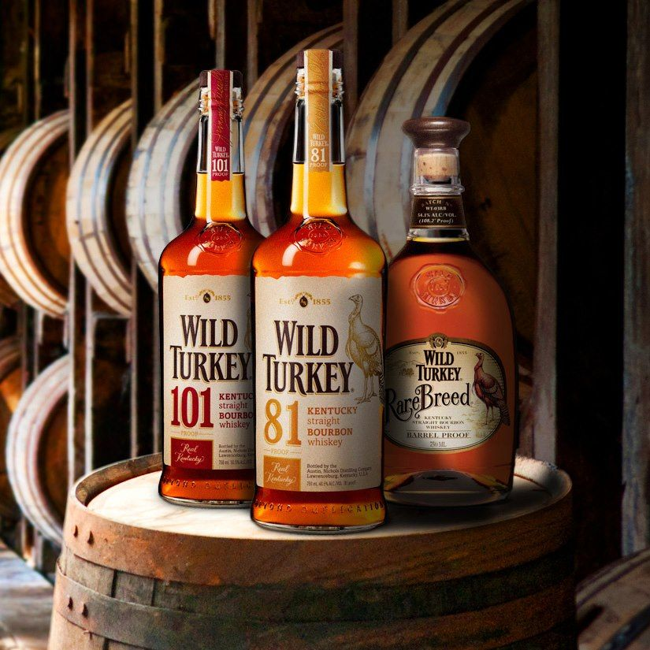

- WILD TURKEY
- Buffalo Trace
- Maker's Mark
1869년 켄터키주에서 창립했으며, 몇 번 매각 이후 캄파리 그룹 소유로 있다.
1869년 창립 이후 계속 위스키를 생산하다 금주법 시대 동안 문을 닫았다. 1905년부터 다시 생산을 했는데, 이때까지는 그냥 지역 특산주 정도로 인식되고 있었다.
본래 브랜드 명칭은 리피 브라더스(Ripy Brothers)였지만 1940년 증류소장이었던 토머스 맥카시가 증류소의 몇몇 샘플을 야생 칠면조(Wild Turkey) 여행에 가져갔고, 이 때 맛을 본 그 친구들이 그 다음 해 찾아가서 "그 야생 칠면조 위스키"라고 언급한 것에 영감을 받아 브랜드 명칭을 와일드 터키로 바꿨다.
원래 101프루프(50.5%)의 높은 도수로 유명했으며 독한 버번의 대명사처럼 취급되기도 했으나, 1974년부터는 81프루프(40.5%) 제품도 출시해 같이 판매하고 있다. 하지만 한국에서 흔히 볼 수 있는 것은 81프루프 제품 뿐이고 101은 위스키 전문 판매점이나 바에서만 취급하고 있다.
